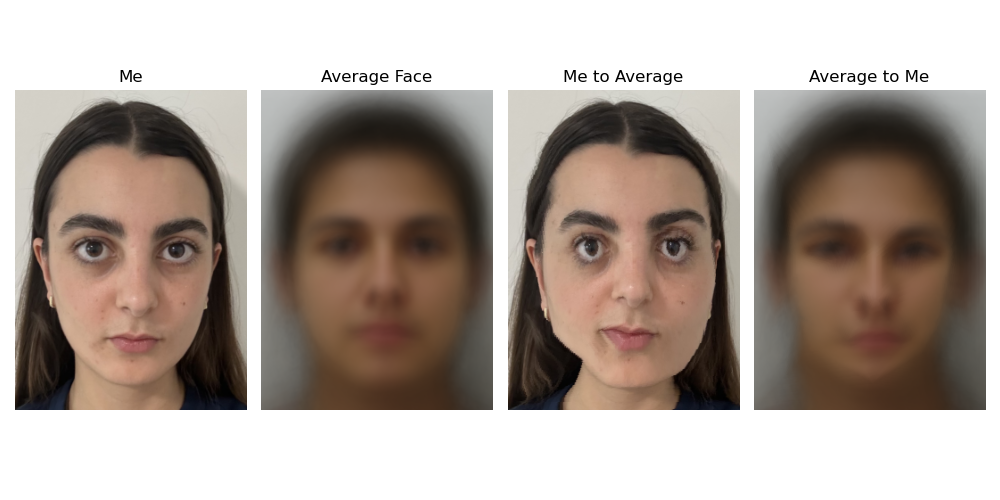

Intro
In order to create masks to transform the images in later steps, we need to define corresponding points between them. I used a corresopndence tool provided on the course website to select around 30 points on each of the following images of Anne Hathaway and Meryl Streep (The Devil Wears Prada theme) by selecting points around the outline of their faces, around/on their eyes, on their noses, etc. I added corner points into these corresponding points, so that the transformation captures not only their faces, but also the pixels beyond them (background). I used the midpoints between the corresponding points to define a mid-way trigulation. The photos and their trigangulations are below.


Description
Description

Description
Description average face shape morphing faces to that shape results

Description average face shape morphing faces to that shape results

Now, average face by averaging all these faces which were morphed to the average shape.

My face warped to mean geometry (left) and then average face warped to my geometry (right).
Description

Description of over the years